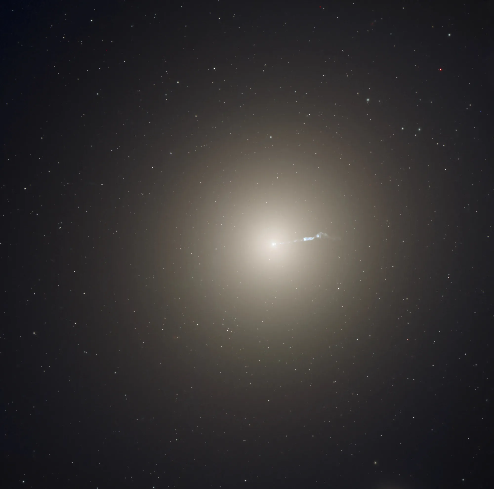
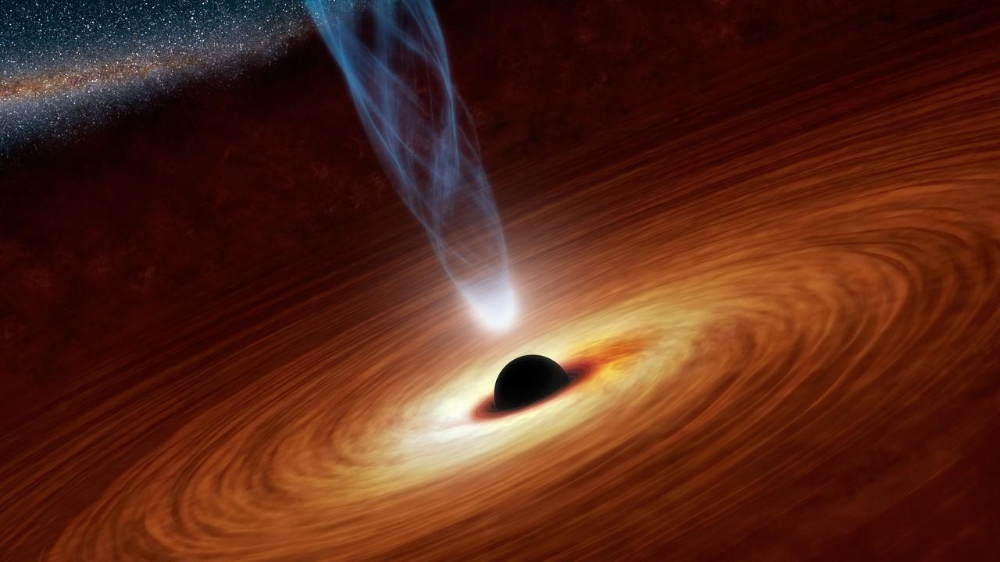

The Milky Way
The Milky Way is the spiral galaxy that contains our Solar System. It holds hundreds of billions of stars, vast clouds of cosmic dust, and a supermassive black hole at its center. Click on the galaxy types below to learn more about the different structures and phenomena that make up our universe.
🌀 Spiral Galaxies

Spiral galaxies contain rotating arms filled with stars, nebulae, and interstellar dust.
⚫ Elliptical Galaxies

Elliptical galaxies are older, smoother galaxies that contain fewer young stars and little gas or dust.
🕳️ Black Holes

Many galaxies contain supermassive black holes capable of influencing the motion of entire star systems.